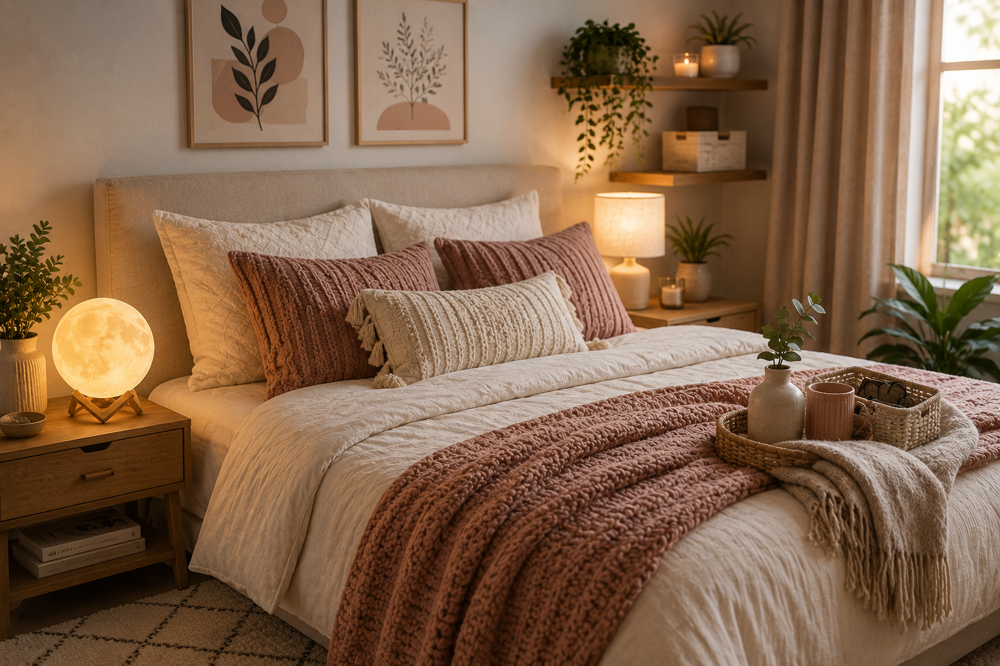
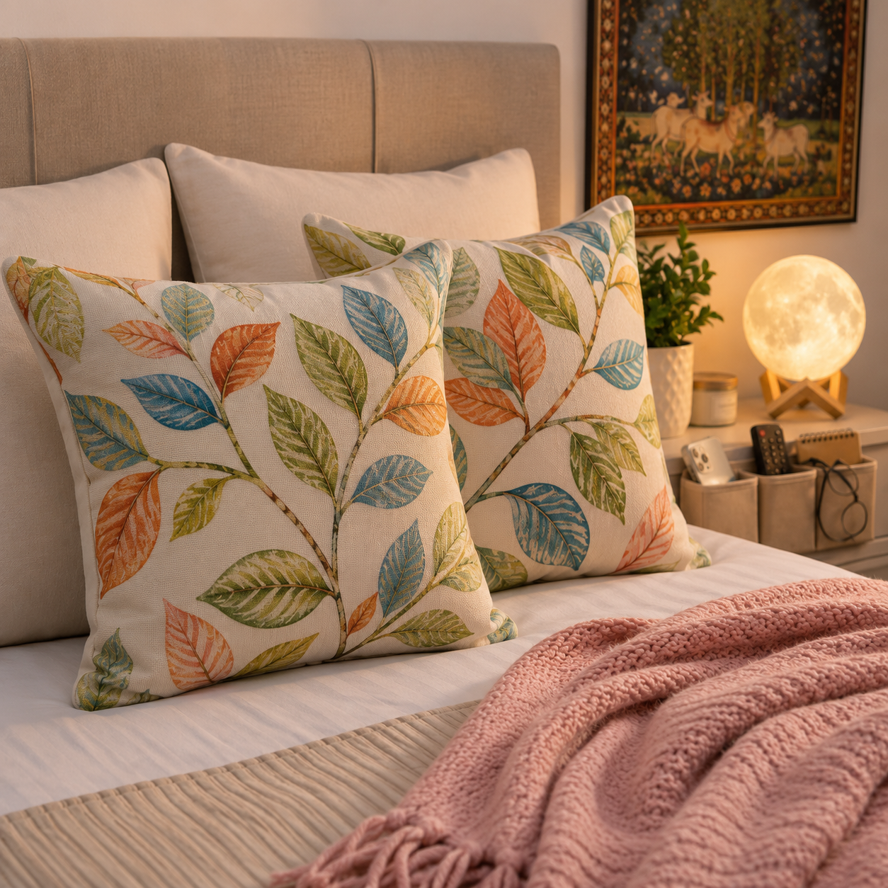
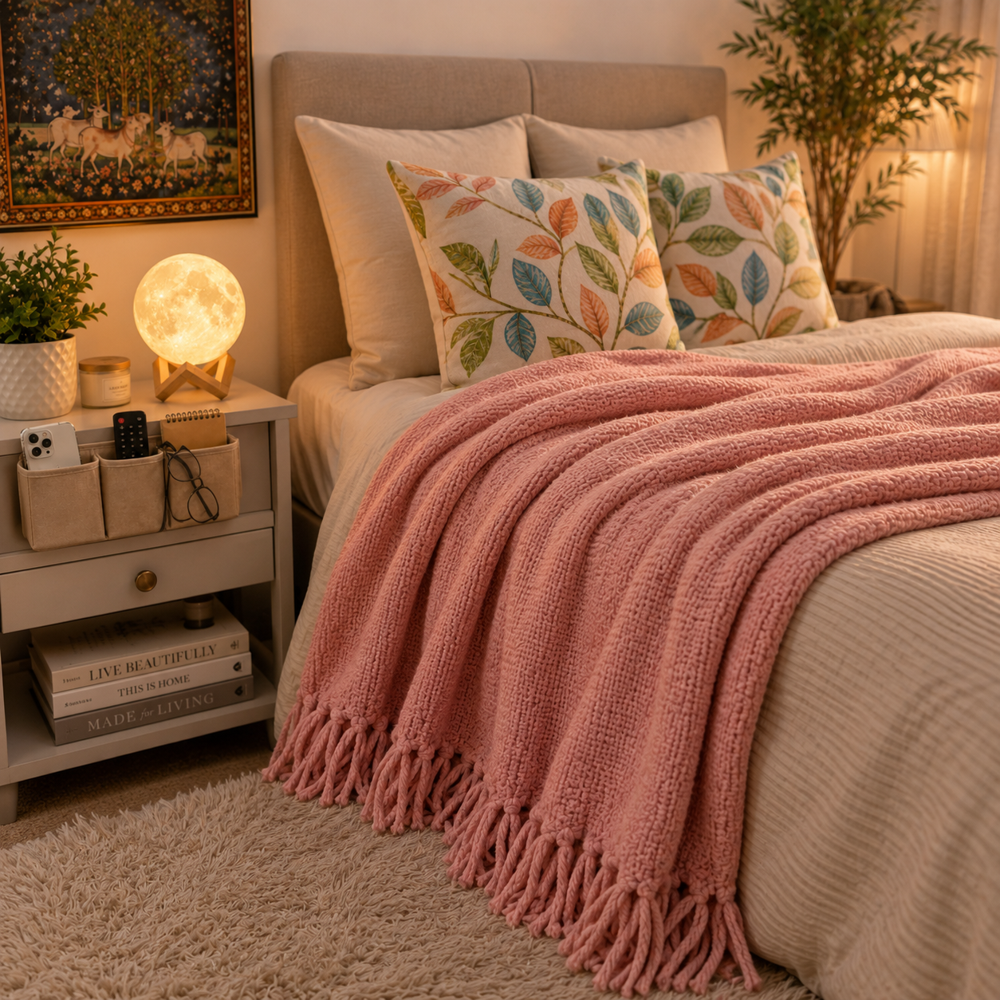
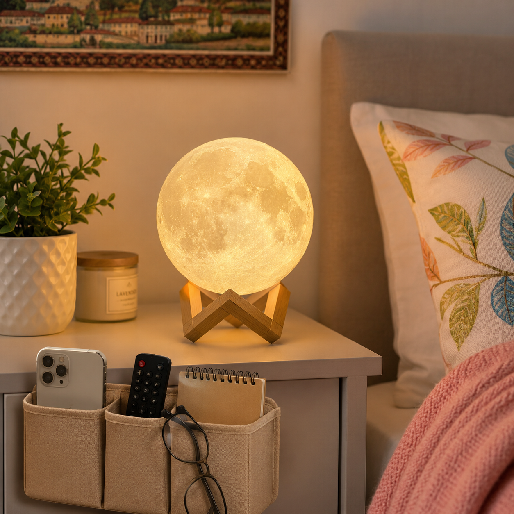
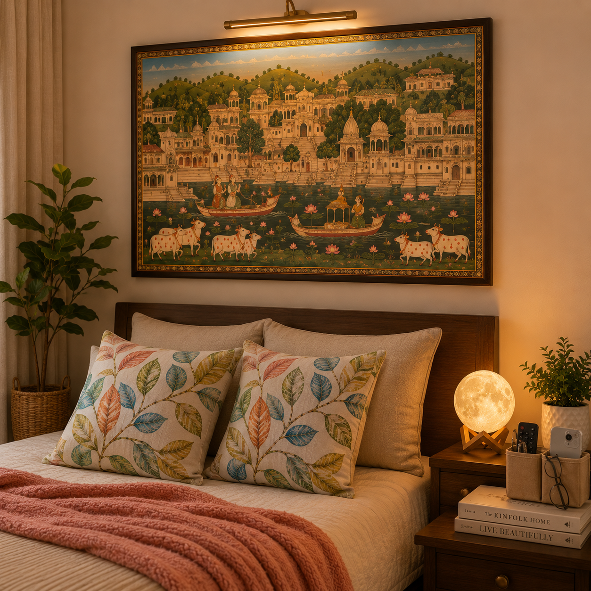

Introduction
A well-designed bedroom can create a more relaxing and restful environment. Simple decor updates often make a noticable difference without requiring a complete room makeover. Whether you're updating your space or adding the finishing touches, the right accessories can enhance both comfort and style.
In this article, we're highlighting five beautiful bedroom decor essentials that can help transform your space. These decor pieces are stylish, practical, and suitable for a wide range of bedroom styles.
Affiliate Disclosure: This article may contain affiliate links. If you purchase through these links, we may earn a small commission at no additional cost to you.
Quick Overview
| Product | Best For |
|---|---|
| Leaf Pattern Pillow Covers | Adding Color and Texture |
| Pink Throw Blanket | Creating a Cozy Atmosphere |
| Moon Lamp | Warm Ambient Lighting |
| Bedside Organizer | Keeping Essentials Organized |
| Pichwai Wall Art | Enhancing Empty Wall Space |
1. Decorative Leaf Pattern Pillow Covers

Pillow covers are one of the easiest ways to refresh a bedroom. These decorative covers feature colorful leaf patterns in soft shades of orange, blue, and green, adding a fresh and cheerful touch to the room.s.
Why We Like It
- Adds color and texture to the bed
- Easy way to update bedroom decor
- Suitable for modern and cozy interiors
- Simple to mix with other bedding accessories
2. Soft Pink Throw Blanket

A throw blanket can make a bedroom feel warm and inviting. A soft pink blanket adds a gentle pop of color while creating a comfortable and relaxing atmosphere.
Why We Like It
- Makes the bedroom feel more cozy
- Adds a decorative layer to the bed
- Suitable for all seasons
- Complements neutral bedroom colors
3. Moon Lamp

Lighting plays an important role in bedroom decor. A moon lamp creates a warm glow that helps make the room feel calm and peaceful while also serving as an attractive decorative piece.
Why We Like It
- Creates relaxing ambient lighting
- Unique decorative design
- Ideal for bedside tables
- Helps create a cozy atmosphere
4. Bedside Organizer

A bedside organizer helps keep everyday essentials within reach while reducing clutter. It provides a convenient place for items such as phones, remotes, notebooks, and glasses.
Why We Like It
- Keeps bedside items organized
- Reduces clutter around the bed
- Easy access to daily essentials
- Practical and functional design
5. Pichwai Wall Art

Wall art can transform a plain bedroom wall into a beautiful focal point. A Pichwai-inspired artwork featuring scenic imagery adds character and visual interest while enhancing the overall style of the room.
Why We Like It
- Enhances empty wall spaces
- Creates a decorative focal point
- Adds personality to the bedroom
- Complements a variety of decor styles
Frequently Asked Questions
What are the easiest ways to decorate a bedroom on a budget?
Simple additions such as decorative pillow covers, throw blankets, wall art, and soft lighting can instantly improve the appearance of a bedroom without requiring a large budget.
How can I make my bedroom feel more cozy?
Adding soft textures, warm lighting, comfortable bedding, and decorative accessories can help create a warm and inviting atmosphere.
Are decorative pillow covers worth buying?
Yes. Pillow covers are an affordable way to refresh bedroom decor and can easily be changed to match different seasons or styles.
Where should a moon lamp be placed in a bedroom?
A moon lamp works best on a bedside table, shelf, or dresser where it can provide soft ambient lighting and serve as a decorative accent.
How do I keep my bedside area organized?
Using a bedside organizer can help store everyday essentials such as phones, glasses, notebooks, and remote controls while reducing clutter.
What type of wall art looks best in a bedroom?
The best wall art depends on personal preference, but calming artwork, landscapes, nature-inspired designs, and decorative prints often work well in bedrooms.
Final Thoughts
Creating a beautiful bedroom doesn't require major renovations. Small decorative additions such as colorful pillow covers, a cozy throw blanket, soft lighting, organized storage, and attractive wall art can make a significant difference.
These simple bedroom decor ideas can help create a comfortable and relaxing space that feels both stylish and inviting.